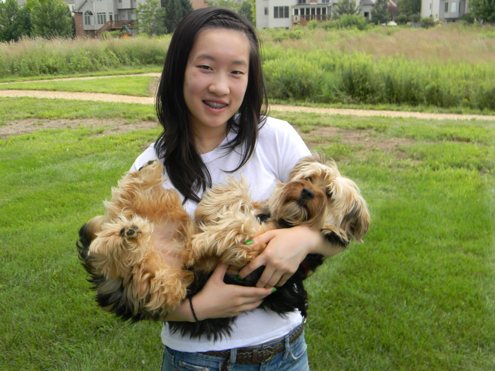
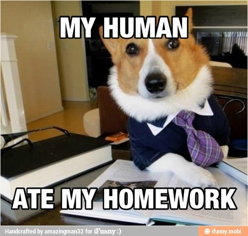
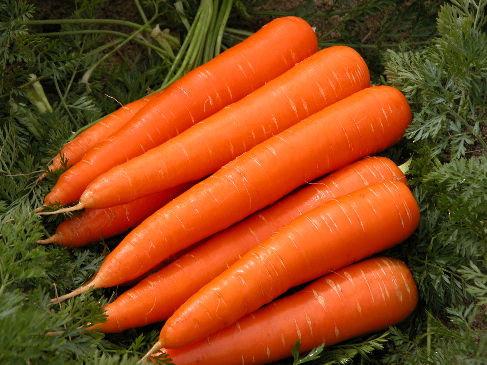
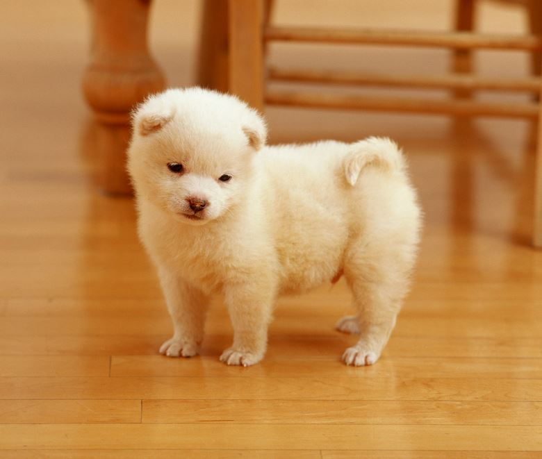

In the end, however, it's essential to be happy along with your family. As much fun as it is to misbehave and force your brother to run way too much, making them feel positive enables you to share the emotion vicariously. You still don't want to be like this guy, though.


Finally, make sure you get the best foods available by sitting under your family when they eat their meals, especially if they're in a rush. Their food tastes a LOT better than the food they give us! Also, some of my other favorite foods are broccoli and carrot sticks, which my brother slips me when he's eating.
Whenever your family is home, spend time with them up to the point where you become a pest. Trust me, whether regardless of their mood, they'll be happy to see you! Especially when they're upset or have had a bad day, there's nothing that cheers them up more than a fuzzy bundle of kisses.
